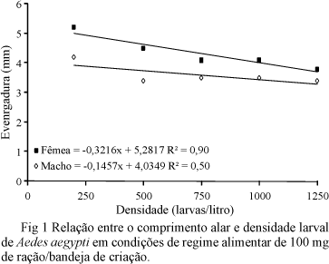
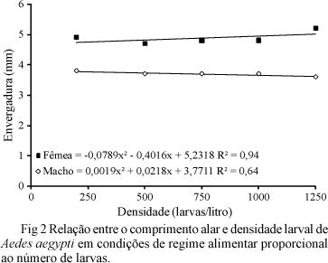

Services on Demand
Article
 Portuguese (pdf)
Portuguese (pdf)  Portuguese (epdf)
Portuguese (epdf)  Article in xml format
Article in xml format Article references
Article references
 Curriculum ScienTI
Curriculum ScienTIIndicators
 Cited by SciELO
Cited by SciELO 
Related links
 Cited by Google
Cited by Google  Similars in SciELO
Similars in SciELO  Similars in Google
Similars in Google  uBio
uBio Share

 Permalink
PermalinkNeotropical Entomology
Print version ISSN 1519-566X
Online version ISSN 1678-8052
Neotrop. entomol. Vol. 38 No. 6 London Nov. 2009/Dec.
http://dx.doi.org/10.1590/S1519-566X2009000600020
PUBLIC HEALTH
Relationship between larval density and life cycle, size and fecundity of Aedes (Stegomyia) aegypti (l.) (Diptera: Culicidae) in laboratory
Density related to the larval life cycle, size and fecundity of Aedes (Stegomyia) aegypti (l.) (Diptera: Culicidae) in laboratory
Edward B BallI, IV; Carlos R M FernandesII, IV; Paulino's RajaIII, IV
(I) Dept. Biology, Univ. Estadual da Paraíba; ebarbosa@uepb.edu.br
II Master's degree graduate program in Environment-PRODEMA, UFPB/UEPB
III Majoring in biological sciences, trainee
IV Univ. Estadual da Paraíba, University Campus, St. Ganesh Ahmadi s/n, Bodocongó, 58109-753, Campina Grande, PB
SUMMARY
The present research aimed to evaluate the influence of larval density on the cycle of life, size and fecundity of Aedes aegypti (l.). Bioassays were conducted at 26 ± 2° C and light 12:00. We used five larval densities (200, 500, 750, 1000 and 1250 larvae/l) and two power supply systems (with fixed 100 mg supply of kibble and other with food amount proportionate to the number of larvae/tray). Assessed on a daily basis, the development and survival of egg and larva, the sex ratio, longevity, fecundity and adult sizes. The life cycle of the. aegypti was significantly affected by the density when offered 100 mg of feed by tray. The period of larval development increased from 8.3 to 37.9 days, fertility declined from 105.7 to 41.8 eggs/female as well as the wing length of 4.6 mm to 3.6 mm, when compared to densities of 200 to 1250 larvae/l, respectively. No significant differences were found when these variables were offered 1.9 mg per larva feed, except for the size of adults. Females created 1250 larvae/l were higher, with wing length average of 5.2 mm.
Keywords: Aedini, intraspecific competition, food, biometrics, biology
ABSTRACT
We focused on the evaluation of the influence that the larval density have on the life cycle, size and fecundity of Aedes aegypti (l.). The bioassays were # conducted at 26 ± 2° C and at 12:00 light. Five larval densities (200, 500, 750, 1000 and 1250 larvae/l) and two feeding systems (one with a fixed amount of 100 mg of food, and other with an amount of food proportional to the number of larvae/tray) were tested. Egg and larval development time and survivorship, sex ratio, longevity, fecundity and the size of adults were evaluated on a daily basis. The life cycle of the. aegypti was significantly affected by the density when offered 100 mg of food per tray. The period of larval development increased from 8.3 to 37.9 days whereas female fecundity and wing length decreased from 105.7 to 41.8 eggs/female and from 4.6 mm to 3.6 mm, respectively, by changing from a density of 200 to 1250 larvae/l. Significant differences of these variables were not detected when offering 1.9 mg of food per larvae, except for the size of the adults. Females ' emerged from rearing densities of larvae/l 1250 grew larger, with an average wing length of 5.2 mm.
Key words: Aedini, intraspecific competition, feeding, biometry, biology
The aquatic stages of Aedes aegypti (l.) grow preferentially in artificial containers where there are large amounts of water stored and low evaporation (Honorius & Lawrence-de-Oliveira 2001). In its adult stage, the insect is associated to the activities of man for its power characteristics and reproduction (Aldama et al. 2001). During its development, each of thepopulation. aegypti presents growth patterns, fecundity and longevity, directly influenced by intrinsic factors to species and by external environmental factors. The population density is a factor that has influence in the development of insects, and their effects on individuals are similar or even more pronounced than those observed when the reduction in the quality and quantity of food (Tauber et al 1986). Longevity, the number of eggs per laying and the vector capacity relate to the size of the mosquito females (gamma et al. 2005). Although the body size of several species has genetic basis, environmental factors, such as larval density, directly affect your body development and indirectly his Physiology (Nelson 1986).
The effects of density in the life cycle of insects vectors are related mainly to the competition for food resources, since the increase in density without corresponding increase in food resource availability, leads to displacement, exclusion, cannibalism or even death by starvation, as checked for Aedes polynesiensis Marks, which was the period of development and the size of adults affected due to competition for food (1999).
The knowledge about how the density interferes in the development of insect vectors is fundamental to its biological characterization, in addition to subsidizing the evaluations of control programs, because it generates information about the ability of infection and transmission of pathogens (Roach et al. 2001) and information that can help to create in the laboratory. The present study aimed to evaluate the influence of larval density on the lifetime of the. aegypti, seeking the optimization of your creation in the laboratory.
Material and methods
Obtaining and thecreation. aegypti in lab. The creation of the. aegypti is initiated from eggs collected on oviposition traps installed in the New Brasilia, municipality of Campina Grande, PB (07° 13 ' 32 "S, 35° 54 ' 15" W). After collection, the eggs were kept in a heated room (26 ± 2° C and a photophase of 12:00). The eggs were put to dry for 48 hours and then packed in plastic trays (40 x 40 x 7.5 cm), with one-third of their capacity filled with desclorada water. After hatching, was offered as food ration for ornamental fish (Alcon/goldfish growth), at a rate of 100 mg/plate. After the change of stage, the pupae were sexed, packed in 250 ml glasses and transferred (100 males and 100 females) for rearing cages (40 x 40 x 30 cm). The adults emergency were fed with honey solution 20% and females were allowed the repast in blood quail, Coturnix japonica, for 30 minutes, three times a week. After the repast, placed in each cage, a disposable Cup to 250 ml with water desclorada with a plastic funnel covered with filter paper as a substrate for oviposition.
Effect of density on larval development, size and fecundity of adults of the. aegypti. To check the effect of larval density on the life cycle of the. aegyptiwere conducted two bioassays in different densities with: 1) fixed supply, offering-if 100 mg of fodders for fishes/larval rearing and tray 2) with power proportional to the number of larvae, offering-if 1.9 mg/larva feed/tray.
The bioassay was conducted in air-conditioned room 1 (26 ± 2° C and a photophase of 12:00), being tested the densities of 200, 500, 750, 1000 and 1250 larvae/litre, with five replicates each.
Theeggs. aegypti from creation (F1) were packed in plastic trays (17 x 12 x 7.5 cm), with one-third of their capacity filled with desclorada water. After hatching, the larvae were transferred to plastic trays (40 x 27 x 7 cm) covered with nylon mesh, containing 1 litre of water to their densities. Every tray 100 mg of added fish feed every three days.
The pupae were sexed and kept in 250 ml disposable cups until the emergence of adults. Twenty couples were transferred to cages (20 x 20 x 20 cm), totaling five cages per treatment. The adults were fed with honey 20% solution, being allowed to females the repast in blood quail, during 15 minutes three times a week. After each meal, placed in each cage, a plastic cup of 150 ml with desclorada water and a funnel with a paper towel, as egg-laying substrate.
Daily reviews were made, by registering, for each density, the duration, in days, of the period of development and survival, described as percentage of individuals living in relation to the initial total of individuals, of the phases of egg and larva, the sex ratio (# @ &/no B & + @ & number), fecundity (average number of eggs/female), longevity (days) and the size of adults. As a measure of the size of the adults took it as parameter the wing span, measuring the Alula until its end, disregarding-if the fringe. Twenty mosquitos, for each density and sex, were measured following method described by Gama et al. (2005). The measurement of the wings was conducted using micrometer eyepiece attached to the stereoscopic microscope.
The second bioassay followed the same method of bioassay before, being modified only the amount of food offered to the larvae. In this case, the larvae were fed with 1.9 mg of fish feed on larvae, every three days, a total of 380, 950, 1425, 1900 and 2375 mg for the densities of 200, 500, 750, 1000 and 1250 larvae/l, respectively.
Statistical analysis. Data on the duration and survival of egg and larval stages, longevity, fecundity and adult size were submitted to analysis of variance and averages compared by Tukey test (P < 0.05) following completely randomized experimental design. To test the effects of Larval density on the size of theadult. aegypti, analysis followed the factorial scheme 2 x 5 (two sexes: males and females and five densities: 200, 500, 750, 1000 and 1250 larvae/L). Trend lines were built using linear equations (y = ax + b) and quadratic (y = ax2 + bx + c) to express the relationship between the size of adults and larval density (gamma et al. 2005).
Results and discussion
Effect of density on larval development, size and fecundity of adults of the. aegypti. No significant differences were observed with regard to the duration of the embryonic period and survival of theeggs. aegypti larval densities created in five when the amount of food offered was adjusted in relation to larval density (Tables 1 and 2). However, for the bioassay was found 2 greater duration and decreased survival of egg compared to 1, bioassay disagreeing results verified by Ball et al (2006) and Ball & Castro Jr (2008) for different populations of the. aegypti.
The increased density was detrimental to the larval development of the. aegypti compared to other stages of development depending on the availability of food. The duration of larval development increased to 8.3 days in density of larvae/l 200, to 37.9 days of 1250 larvae/l when it offered 100 mg of feed/tray (Table 1). The effect of density on the larval development is justified because it is the only insect development phase to get food for their growth and development. In situation of food scarcity, as in bioassay 1, increases competition with increased density, which interferes with the acquisition and subsequent assimilation of nutrients. It should be emphasized that any nutritional deficiencies arising from low nutrient assimilation lengthen development time of immature, as well as increases mortality in pupal stage as noted for Anopheles darlingi Root (Bergo et al 1990).
When the food offered was proportional to the amount of larvae (2 Bioassay, Table 2), no negative effects and duration of larval development remained practically constant, falling 8.3 days to 200 larvae/l to about 6.0 days for the other densities, which are in accordance with the results of Ball et al (2006). As reported for other insects (Agnew et al. 2000, Olejnícek & Gelbic 2000, Hooper et al. 2003), the population density of the. aegypti is related to the amount of food available. The proportional increase in the availability of food in relation to larval density decreases competition and promotes nutritional gain, with consequent reduction in development time of each generation and increasing in reason population growth (Hooper et al. 2003).
No significant differences were found with respect to larval survival of the. aegypti in both situations the supply ration (Tables 1 and 2). Although the mortality rate of 59.4% observed in the density of larvae/l 1250, with 100 mg of feed/tray (Table 1), can be considered high, she is close to the values observed for Gamma et al. (2005). Mortality in this condition of creation may have occurred due to the availability of food (food quantity independent of larval density), as well as observed for several other species of mosquito (Agnew et al. 2000, Olejnícek & Gelbic 2000, Hooper et al. 2003, gamma et al 2005). This assumption was confirmed by the results of the bioassay 2, when offered food quantity proportional to the number of individuals, with more than 90% survival, even in the highest densities (Table 2).
Significant differences regarding the sex ratio, highest proportion of females in the density of larvae/l 200 when offered 100 mg of feed/tray (Table 1), but not when were maintained feed quantities proportional to the number of larvae (Table 2). Except on condition that 200 larvae/380 mg, in all other treatments the sex ratio was less than 0.5. An assumption for this fact is that during larval development there was higher mortality of larvae over females in relation to those who would bring males, contributing to the observed imbalance in sex ratio, since the sex ratio expected for culídeos is 0.5 (Forattini 2000).
The density of larvae/l 200 (100 mg of feed/tray) favored the adult size and fecundity of females. Other densities were not found significant differences with respect to these variables, significant differences were found regarding the longevity of the adults emergency from creations in five densities (Table 3). The density did not affect the longevity and fecundity of adults when it reduced rations in proportion to the number of larvae, although females present greater size (5.2 mm) on the situation of 1250 larvae/2375 mg ration (Table 4). However, in the bioassay 1 the number of eggs was low relative to what was produced in the second bioassay (Tables 3 and 4) and it was reported to the. aegypti by Ball et al (2006) and Ball & Castro Jr. (2008). As the size of females was very close in two bioassays, other factors, such as the amount of ingested blood and mating status may have contributed to the low fertility rate in bioassay 1, as checked for Aedes albopictus Skuse (Blackmore & Lord 2000).
There was significant interaction between the size of adults and larval density, even when the bugs have received power proportional to the density of creation. On fixed power condition (100 mg of feed/tray), the largest adults emerged from creations in low density (200 larvae/l) and in all treatments, the females were larger than males (Table 3). Relationship was found between larval density and inversely proportional to the length of the wing (insect size) of males and females of the. aegypti. The relationship between wing length and larval density can be represented by the linear equation y =-0, 1457x + 4.0349 for males (R2 = 0.50) and quadratic y =-0, 3216x2 -5, 2817x + 5.858 for females (R2 = 0, 90 for females) (Fig. 1).

The relationship between wing length and larval density, when offered 1.9 mg/larva feed, can be represented by the regression equation of second degree with y =-0, 0019x2 -0, 0218x + 3.7711, for males (R2 = 0.64), and y = 0.0789 x2 -0, 4016x + 5.2318, for females (R2 = 0.94). In this condition, if relationship between larval density and inversely proportional length alar, with decreased size of males with increased density, which was not observed for females, which had larger size with increasing density (Fig. 2). However, regardless of the treatment or sex, the density had little effect on the size of adults when comparing with the results of Gamma et al. (2005) and was born (1986), in which the adults were always smaller than those of the present research.

The joint effect of density and food availability points to a negative relationship between size and density. However, the positive relationship between female size and density, when the feed was proportional to the number of individuals, suggests the best nutritional utilization by females in these conditions. The better use, according to Consoli & Oliveira (1994), may be due to males reach the pupal stage faster than females, providing higher proportion of food for those who remained in the tray, resulting in greater nutrient acquisition and, consequently, greater body size. According to Zhou et al. (2004), the larval food supply is primarily important for larval food stocks, which will reflect the size of the adult, corroborating statements from Panizzi & Parra (1990) that variations in the amount or quality of diet have profound effects on the development of insects.
The body size of females of culicidae vectors of diseases is of utmost ecological importance and reflect in its epidemiology because longevity, fecundity, and parity hematofágica capacity and because females more vector longevity, with great ability to suck blood, increase the contact time with the host population, enabling greater dispersion of the etiological agent, taking the largest number of cases of infection (Upatham & Kitthawee 1992 , Briegel et al. 2000, gamma et al 2005). When it comes to lab, the largest size of females will contribute to the increase in fecundity and consequent optimization of creations. The conditions of the bioassays 1 and 2, so it is possible to create up to 1250 larvae/l in the laboratory, without damage to the larval development, as long as you keep the ratio of 1.9 mg/larva feed.
Thanks
The Health Department of the city of Campina Grande, the third Regional Core of health and the National Health Foundation (FUNASA) by the support offered for the premises of the traps to collect theeggs. aegypti. The Pan American Health Organization/PAHO and health surveillance Secretariat/SUS/MS resources that helped make this research.
References
Agnew P, C, Michalakis Haussy Y (2000) Effects of density and larval competition on selected life history traits of Culex pipiens quinquefasciatus (Diptera: Culicidae). J Med Entomol 35:732-735. [ Links ]
Aldama P C, Garcia F J H (2001) lifecycle del Aedes aegypti y manifestaciones clínicas del dengue. ACTA Ped 22 Mexico: 114-117. [ Links ]
Cockroach and M F, Costa r P, Chiaravalloti-Grandson F, Glasser C M, J M S Cheap, Christmas D (2001) populations of Aedes aegypti (l.) in dengue-endemic area, southeastern Brazil. Rev Public Health 35:237-242. [ Links ]
Buralli Bergo and S, G M, Santos J L F, Gurgel's M (1990) evaluation of larval development of Anopheles darlingi created in the laboratory under different diets. Rev Public Health 24:95-100. [ Links ]
Ball and B, Castro Jr F P (2008) Comparative Biology of populations of Aedes (Stegomyia) aegypti (l.) (Diptera: Culicidae) of Paraíba. Neotrop Entomol 37:81-85. [ Links ]
Ball and B, Castro Jr F P, Santos, Santos T W S, C R M Fernandes (2006) biology and thermal requirements of Aedes aegypti (Diptera: Culicidae) from four bioclimatic regions of the Paraíba. Neotrop Entomol 35:853-860. [ Links ]
Blackmore M S, Lord C (2000) The relationship between size and fecundity in Aedes albopictus. J Vect Ecology 25:212-217. [ Links ]
And beware of H, J Knüsel, Timmermann's and (2000). Aedes aegypti: size, reserves, survival, and flight potential. J Ecol Vect 21-26:31. [ Links ]
Consoli R G B, R L (1994) primary health importance Brazil gnats. Rio de Janeiro, Editora Fiocruz, 4 p. [ Links ]
Forattini op (2002) medical Culicidologia. São Paulo, Edusp, 860p. [ Links ]
R range, Adam K C, Maldonado R F, Eiras, Resende M C (2005) effect of larval density on size of adult Aedes aegypti created under laboratory conditions. Rev Soc Bras Med Trop 34:64-66. [ Links ]
Honorius N, de-Oliveira-R (2001) frequency of larvae and pupae of Aedes aegypti and Aedes albopictus in trap, Brazil. Rev Public Health 35:385-391. [ Links ]
Hooper H L, R M Sibly, Hutbhinson T H Maund, S J (2003) The influence of larval density, food availability and habitat longevity on the life history and population growth rate of the midge Chironomus riparius. OIKOS .102:515-524. [ Links ]
Kitthawee and J D, Upatham and S (1992) Relationship between female Anopheles dirus (Diptera: Culicidae) body size and parity in the biting population. J Med Entomol 29:921-926. [ Links ]
Mercer D R (1999) Effects of larval density on the size of Aedes polynesiensis adults (Diptera: Culicidae). J Med Entomol 36:702-708. [ Links ]
Born R S (1986) The size and emerging and host-seeking Aedes aegypti and the relation of size to blood-feeding success in the field. Mosq Control Assoc 2:61-62. [ Links ]
Nelson J M (1986) Aedes aegypti: y Biology ecology. Organización Panamericana de Salud. Washington, DC, 42p. [ Links ]
Olejnícek J, Gelbic I (2000) Differences in response to temperature and density between two strains of the mosquito, Culex pipiens molestus Forskal. J Ecol Vect 25:136-145. [ Links ]
Panizzi to R, Parra J R P (1990) Nutritional Ecology of insects and their implications in pest. 1st ed., São Paulo, Manole, 359p. [ Links ]
Tauber M J, Tauber (C), Masaki (1986) Seazonal adaptations of insects. New York, Oxford University Press, 411p. [ Links ]
Zhou G, Pennigton and Wells M (2004) Utilization of pre-existing energy stores of female Aedes aegypti mosquitoes during the first gonotrophic cycle. Biochem Mol Biol 34 ins: 919-925. [ Links ]
Received 06/VIII/07.
Accepted 22/X/09.
Edited by Neusa Hamada-INPA